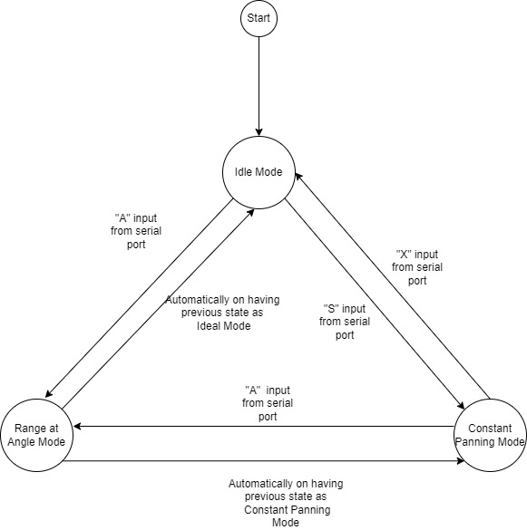

State Diagram for Changing between the Modes
On powering on the sensor module one can can below menu to choose from:
== Type a single character command ==
=====================================
S - Start continuous scanning mode
X - Stop continuous scanning mode
A, angle, range - A scan at angle (degrees) over range (degrees)
Useful Resources
For more information refer documentation.